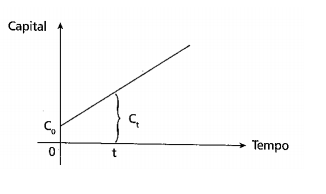
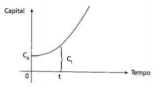

Matemática Financeira
“A Matemática Financeira ou Matemática das Finanças é uma ciência que se preocupa em analisar os fenômenos econômico-financeiros à luz dos métodos quantitativos, fornecendo modelos e processos eficientes na solução de problemas relacionados à tomada de decisão de ordem pessoal, empresarial e governamental” (FERREIRA, 2010).
“A Matemática Financeira tem por objetivo estudar a evolução do valor do dinheiro ao longo
do tempo”(DAL ZOT, 2006).
Conceitos importantes
Capital Inicial, Principal ou Valor Presente
É o valor inicial de um empréstimo ou aplicação, sobre o qual irão incidir os juros.
Símbolos: C, P ou PV (Present Value)
Prazo
É o tempo de duração do empréstimo ou do investimento. Pode ser medido em dias, meses,
trimestres, semestres, anos, etc.
Símbolo: n
Juro
É a taxa percentual ou unitária do rendimento do capital ou pagamento pelo uso do capital, numa
unidade de tempo (ao dia, ao mês, ao ano,...)
Símbolo: i
Taxa percentual de juros: 5 %
Taxa unitária de juros: 0,05
Montante ou valor futuro
É o valor total a ser pago ou recebido com a finalidade de quitar um empréstimo. É o valor final de
uma aplicação.
Símbolo: M, S ou FV (Future Value)
Fórmula:
M = P + J
Regime de capitalização
Ato de adicionar juros ao capital.
Capitalização Simples ⇨ Juros Simples
Capitalização Composta ⇨ Juros Compostos
Capitalização simples
É uma função com crescimento linear.

Capitalização composta
É uma função com crescimento exponencial.
